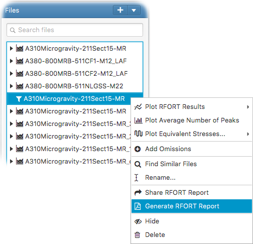

You can generate detailed RFORT analysis reports in PDF format once the RFORT analysis is complete. The detailed reports contain all inputs to the process, comparison plots and results for each pilot point and omission level.
For this, right click on the RFORT item in the file tree and select - Generate RFORT Report
from the popup menu as follows;

This opens the RFORT report generation input panel. You can then define which pilot points and omission levels to be included within the generated report.